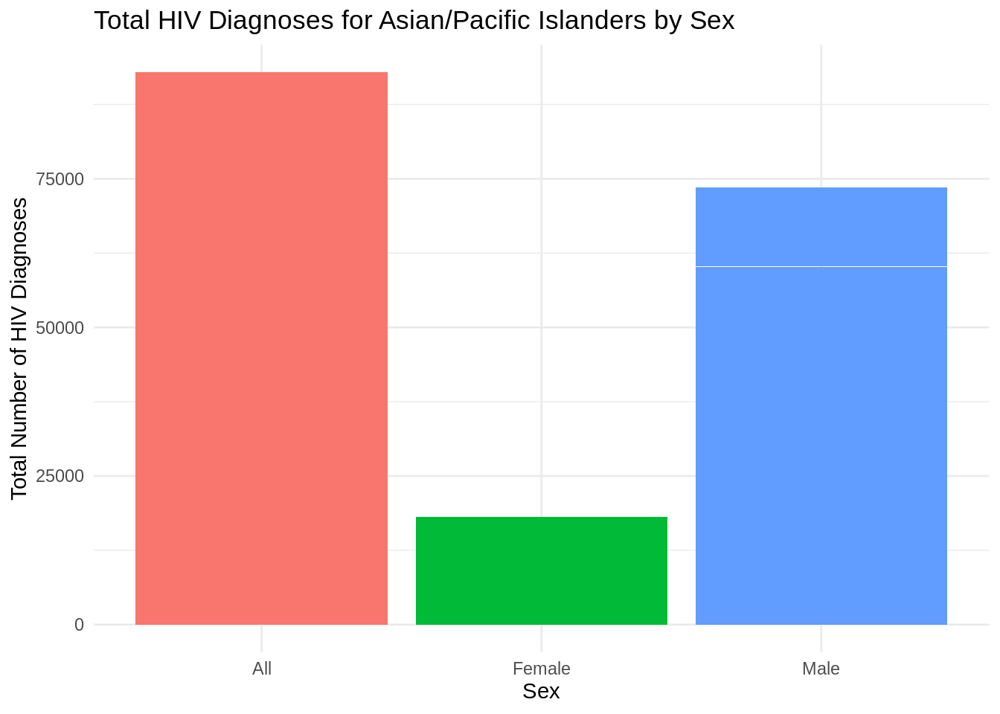
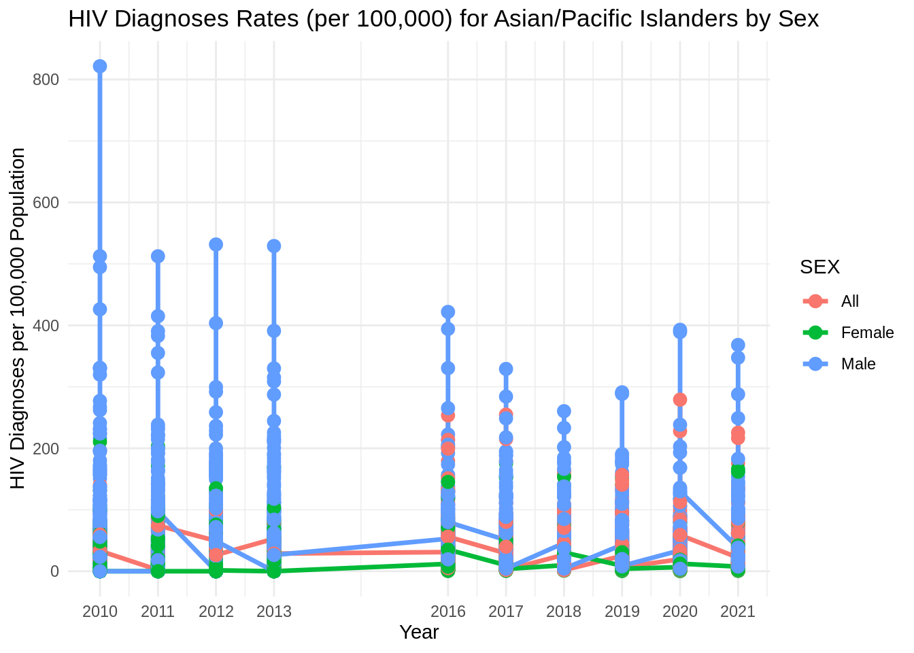

We began to explore several trends we noticed during our data analysis more thoroughly.
From “Line Charts: Trends Over Time (data.qmd)”, the increase is observed only in the Asian/Pacific Islander category, even though a general reduction in HIV diagnoses rates over time across all racial/ethnic groups.
##Comparing “Total Number of HIV Diagnoses” by Sex for Asian/Pacific Islanders
here() starts at /home/tvlaz/MA415/ma4615-sp25-final-project-team-5
df <-read_rds(here::here("dataset", "hiv_clean.rds"))ggplot(df, aes(x = SEX, y =as.numeric(`TOTAL NUMBER OF HIV DIAGNOSES`), fill = SEX)) +geom_bar(stat ="identity") +labs(title ="Total HIV Diagnoses for Asian/Pacific Islanders by Sex",x ="Sex",y ="Total Number of HIV Diagnoses") +theme_minimal() +theme(legend.position ="none")

The bar graph clearly indicates a significant gender disparity in HIV diagnoses among Asian/Pacific Islanders, with males accounting for a substantially higher number of cases compared to females. The number of diagnoses among males is several times higher than that among females, highlighting a pronounced vulnerability or increased risk exposure for males in this population.
##Line Graph of HIV Diagnoses Rates per 100,000 Population Over Years by Sex
ggplot(df, aes(x = YEAR, y =as.numeric(`HIV DIAGNOSES PER 100,000 POPULATION`), color = SEX)) +geom_line(linewidth =1.2) +geom_point(size =3) +labs(title ="HIV Diagnoses Rates (per 100,000) for Asian/Pacific Islanders by Sex",x ="Year",y ="HIV Diagnoses per 100,000 Population") +theme_minimal() +scale_x_continuous(breaks =unique(df$YEAR))

The rate of HIV diagnoses for males (blue dots) is consistently higher than for females (green dots) across all years. Noticeably high spikes occur, especially around 2010-2013 and again in 2017-2018.
For statistical modeling, we will need to do two types of modeling, depending on the variable(s) we want to analyze. For example, some of our variables, like “Total Number of HIV Diagnoses,” are count variables, making Poisson regression the best choice for modeling. For other variables, like “HIV Diagnoses Per 100,000 Population,” we can do linear regression, since these are continuous variables. Below is the preliminary statistical analysis exploring the relationship between “Total Number of HIV Diagnoses” and “Race/Ethnicity,” using “White” as the reference variable. As stated above, because “Total Number of HIV Diagnoses” is a count variable, it fits best with a Poisson model.
suppressPackageStartupMessages(library(tidyverse))suppressPackageStartupMessages(library(tidymodels))hiv_clean <-readRDS(here::here("dataset", "hiv_clean.rds")) |>filter(!`RACE/ETHNICITY`%in%c("All", "Unknown", "Other/Unknown"))split <-initial_split(hiv_clean, prop =0.8)training <-training(split)training$`RACE/ETHNICITY`<-factor(training$`RACE/ETHNICITY`)training$`RACE/ETHNICITY`<-relevel(training$`RACE/ETHNICITY`, ref ="White")mod <-glm(`TOTAL NUMBER OF HIV DIAGNOSES`~`RACE/ETHNICITY`, family = poisson, training)summary(mod)
Call:
glm(formula = `TOTAL NUMBER OF HIV DIAGNOSES` ~ `RACE/ETHNICITY`,
family = poisson, data = training)
Deviance Residuals:
Min 1Q Median 3Q Max
-8.069 -4.682 -2.420 -0.275 84.195
Coefficients:
Estimate Std. Error z value Pr(>|z|)
(Intercept) 2.39442 0.01096 218.55 <2e-16 ***
`RACE/ETHNICITY`Asian/Pacific Islander -0.67104 0.01999 -33.56 <2e-16 ***
`RACE/ETHNICITY`Black 1.08848 0.01247 87.25 <2e-16 ***
`RACE/ETHNICITY`Hispanic 0.95673 0.01264 75.70 <2e-16 ***
`RACE/ETHNICITY`Multiracial -4.19005 0.15289 -27.41 <2e-16 ***
`RACE/ETHNICITY`Native American -7.25423 0.70664 -10.27 <2e-16 ***
---
Signif. codes: 0 '***' 0.001 '**' 0.01 '*' 0.05 '.' 0.1 ' ' 1
(Dispersion parameter for poisson family taken to be 1)
Null deviance: 219052 on 3660 degrees of freedom
Residual deviance: 178275 on 3655 degrees of freedom
AIC: 189073
Number of Fisher Scoring iterations: 6
Using the estimates, the rate ratio, or how much more likely one group is to have an HIV diagnosis compared to the reference group, which is white people in this case, can be calculated. Asian/Pacific Islanders have an approximate rate ratio of e^(-0.73989) ≈ 0.477. Asian/Pacific Islanders have 0.477 times as many, or approximately 52.3% fewer, HIV diagnoses as white people. For black people, the rate ratio is e^(1.03738) ≈ 2.82, meaning they have approximately 2.82 times as many, or 282% more diagnoses than white people. For Hispanic people, the rate ratio is approximately 2.48, meaning they have 2.48 times as many cases as white people. For multiracial people, the rate ratio is 0.017, meaning they have about 98.3% fewer cases than white people. Finally, for Native Americans, the rate ratio is 0.00073, meaning they have about 99.93% fewer cases than white people. Every z-value is > |10|, meaning indicating race has a very strong correlation with HIV diagnoses, which is confirmed by the p-values all being <2e-16, indicating statistical significance.
A point of concern is with the deviance residuals and potential overdispersion. The median is negative, indicating the model tended to overestimate the number of HIV diagnoses; however, the max is 70.741, meaning the model grossly underestimated the number of cases at some point. Combining this with a minimum of -7.842 suggests some observations poorly fit the model, indicating potential overdispersion of the dataset. Checking for overdispersion can be done by dividing the residual deviance by the degrees of freedom, which in our case = 159079/3655 ≈ 43.52, confirming the suspicion of overdispersion. In future analysis, changing the model to better account for this overdispersion will be done, in order to achieve the best estimates possible. Likely, this will involve using a negative binomial distribution, which allows the variance to be greater than the mean, unlike the Poisson distribution, which assumes the mean and variance are equal.